看不見的力：磁場觀察
姓名：
日期：
1. 磁鐵的兩極與互動
磁力與電力一樣，都有「同極相斥、異極相吸」的特性。雖然眼睛看不見，但磁鐵周圍充滿了名為「磁場」的空間。
觀察實驗 使用強力磁鐵與鐵粉（或磁力觀察片），觀察磁鐵周圍的線條分布。
思考任務
- 磁力線最密集的地方在哪裡？
- 如果將兩顆磁鐵的 N 極互相靠近，中間的磁力線會如何變化？
磁力與電力一樣，都有「同極相斥、異極相吸」的特性。雖然眼睛看不見，但磁鐵周圍充滿了名為「磁場」的空間。
觀察實驗 使用強力磁鐵與鐵粉（或磁力觀察片），觀察磁鐵周圍的線條分布。
思考任務
1820年，科學家奧斯特意外發現：當電流流過導線時，旁邊的指南針竟然發生了偏轉！這代表電流會產生磁場。
右手安培定則
想像你的右手握住導線：

操作步驟 將導線放置在指南針上方，接通電源後觀察：
| 電流方向 | 指南針 N 極偏轉方向 (左/右) |
|---|---|
| 由南向北流 | |
| 由北向南流 |
進階：電磁鐵
當我們將導線繞成「線圈」，磁場會互相疊加變強。試著增加線圈圈數，測試吸起迴紋針的數量。
圈數越多，磁性越 ；電流越大，磁性越 。
如果電流可以產生磁場，那反過來「磁場可以產生電流」嗎？法拉第發現：只有在磁場「發生變化」時，電流才會出現。
法拉第右手定則 (弗萊明右手定則)
用於判斷發電機中的感應電流方向：
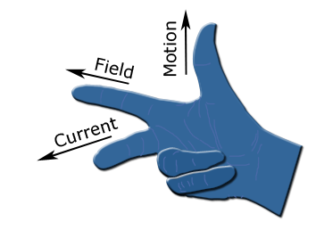
實驗步驟 將強力磁鐵快速穿過線圈，觀察檢流計或 LED 的反應。
觀察記錄表
| 操作動作 | 電流反應 (無 / 微弱 / 強烈) |
|---|---|
| 磁鐵快速進入線圈 | |
| 磁鐵緩慢進入線圈 | |
| 磁鐵快速拉出線圈 |
當我們把一根通電的導線放入磁場中，導線會受到一個推力。馬達就是利用這個力，將「電能」轉換為「動能」的裝置。
馬達的三大構造
實作任務 根據教材材料包組裝簡易馬達，並完成測試：
實驗筆記
原理簡介： 透過手搖轉動齒輪，皮帶帶動線圈在磁場中旋轉，切割磁力線產生「感應電流」，點亮 LED 燈！
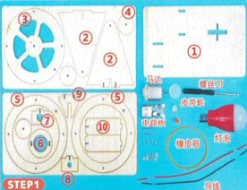
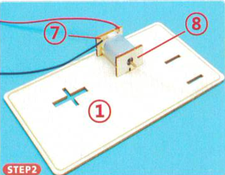
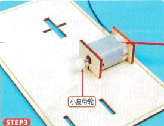
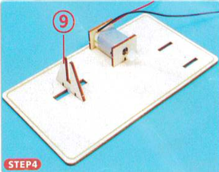
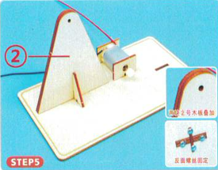
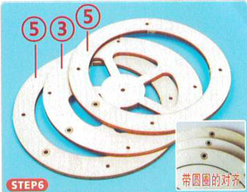
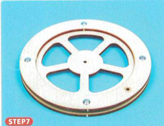
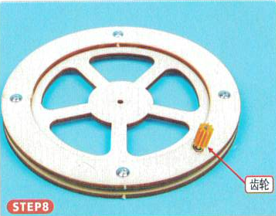
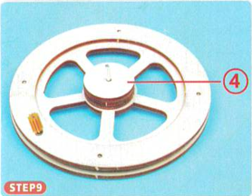
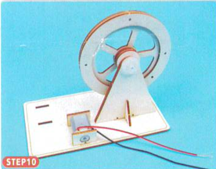
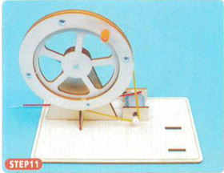
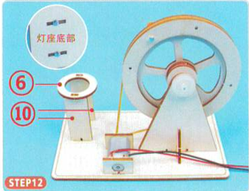
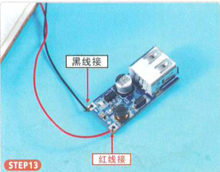
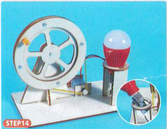
恭喜完成電磁學挑戰！